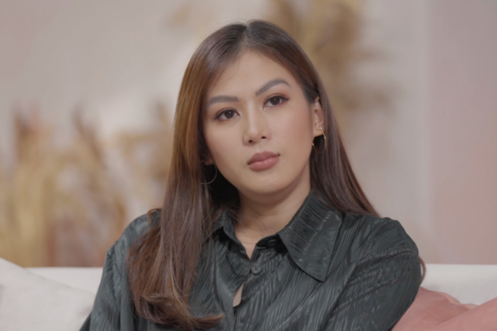

Catherine Cruz Gonzaga-Morada
Early life
Alex Gonzaga was born Catherine Cruz Gonzaga on January 16, 1988, in Taytay, a first-class densely populated municipality of Rizal, to spouses Crisanta "Pinty" Cruz and then-incumbent Vice-Mayor Carlito "Bonoy" Gonzaga. Her elder sister is TV host and actress Toni Gonzaga.
Alex graduated from the University of Asia and the Pacific with a Bachelor of Science in Child Development and Education.[3]
She was also cast on her first film under Star Cinema, The Amazing Praybeyt Benjamin (2014), one of the official entries to the 40th Metro Manila Film Festival.[27][28][29] The film was commercially successful and achieved the milestones for having the highest-gross on opening day of any local film[30] and the title of being one of the highest-grossing local film of all time in the Philippines. The film received mixed to negative reviews from critics. Zig Marasigan from Rappler described the film in his movie review as "a brainless, hyper-stylized and utterly ridiculous family comedy."[31]
Gonzaga released her debut studio album I Am Alex G. (2015) with the studio album's lead hit single, "Panaginip Lang", under Star Music. The studio album had a grand launch at Eastwood Central Plaza on March 22, 2015,[32] and a concert,[28] AG from the East: The Unexpected Concert, which was later on held at the Araneta Coliseum to support her studio album on April 25, 2015. She had another major project as the lead star of the fantasy series Inday Bote,[33][34][35][36] a TV adaptation of the classic Filipino film of the same title.[35][37] She also took hosting duties in the original, local dance competition show Dance Kids, alongside Robi Domingo.[38][39]
Read More
Personal life
In November 2016, Gonzaga began dating Lipa City councilor Michael "Mikee" Morada.[4] On January 16, 2020, Gonzaga announced on Instagram that she and Morada were engaged.[5] On January 17, 2021, Gonzaga announced on her YouTube channel that she and Morada have been married in a private wedding at the Gonzaga residence in Taytay since November 2020.[6]
In a vlog uploaded to her YouTube channel on October 24, 2020, Gonzaga and her family tested positive for COVID-19, and she shared how they recovered from the virus.[7]
In 2021, Gonzaga was pregnant with her first child, until she suffered a miscarriage.[8] On October 2023, she suffered a second miscarriage.[9][10]
Read More

Career | 2006–2012: Early works
Gonzaga started her career on ABS-CBN for the sitcom, Let's Go!, where she played the role of Alex, which also became her personal nickname. Her role lasted until the series' fourth season called Gokada Go!. After her departure from the sitcom, she was cast in different dramas on the same network, such as Pangarap na Bituin, Your Song and My Girl.[11][12]
In 2008, Gonzaga transferred to TV5 and became one of the hosts for the talk show, Juicy!. She played a lead role in the 2011 soap opera Babaeng Hampaslupa. Further roles on the network include BFGF, P.S. I Love You and Enchanted Garden.[13][14]
Read More